Chapter 2 Data visualisation
Cette partie va vous apprendre à visualiser vos premières données sous R avec ggplot2. Une des façons de mettre en forme vos données est d’utiliser la librairie ggplot2, qui utilise la grammaire des graphiques. Elle considère qu’un graphique se décompose d’élément simple comme la position d’un objet géométrique sur l’axe des ordonnées, des abscisses, de sa couleur et de sa taille … etc. La combinaison de ces éléments esthétiques des formes géométriques pour un graphiques est comparable à la construction d’une phrase. 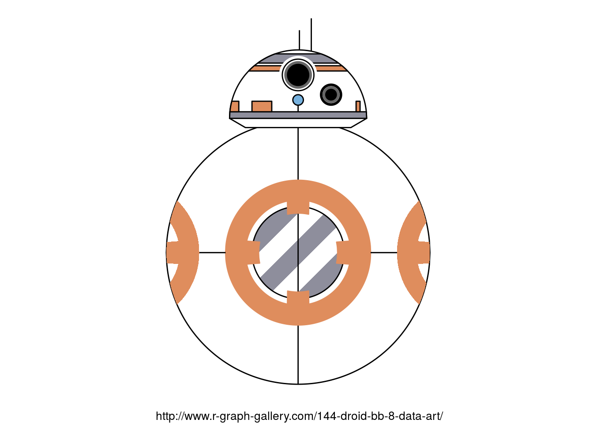
Un graphique, en plus du rendu visuel attractif, en data science sert généralement à répondre à une question. Par exemple
- Quelle est la forme de mes données ?
- Quelle est la relation entre mes jeux de données ? linéaires, non-linéaires …
2.1 Premier graphe avec ggplot2
Nous allons utiliser des données déjà disponible dans R.
?cars
class(cars)## [1] "data.frame"Puis, nous allons charger la librairie ggplot2 library(ggplot2) afin de disposer des fonctions de ggplot2 afin de créer notre premier graphique. La fonction ggplot(data = data.frame) permet d’alimenter le graphique en données.
library(ggplot2)
ggplot(cars) + geom_point(aes(x=speed,y=dist))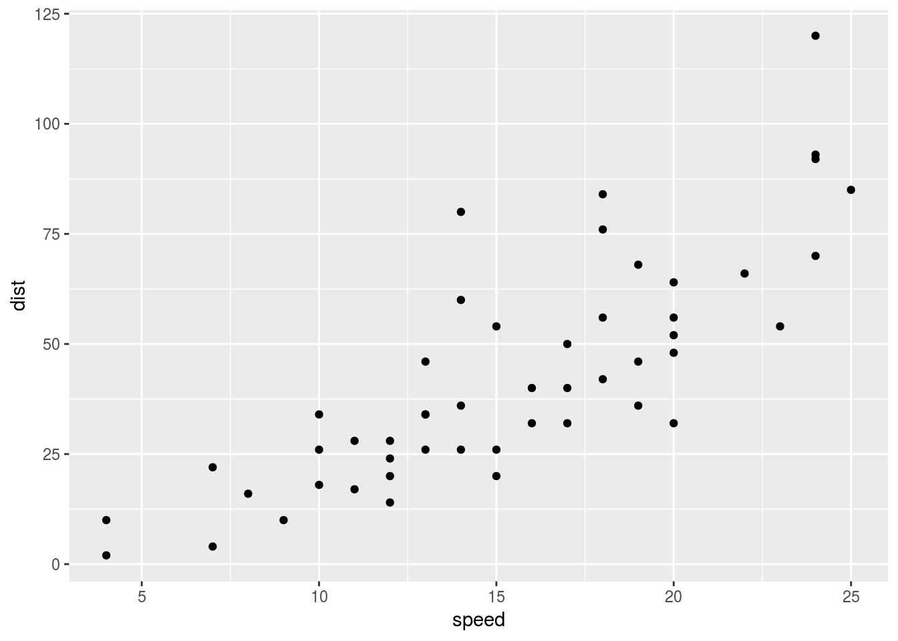 La fonction aes() permet de contrôler la position des géométries, qui sont définies par la fonction de type geom_forme() et affichées sur le graphe. Dans cette exemple, nous avons choisi de dessiner les colonnes speed et dist sur respectivement l’axe des x et y. Mais, la fonction aes() peut aussi définir la taille, la couleur, la transparence et la forme d’éléments géométriques en fonction des données du graphique.
ggplot(cars) + geom_point(aes(x=speed,y=dist,size = speed))ggplot(cars) + geom_point(aes(x=speed,y=dist),size=4)ggplot(cars) + geom_point(aes(x=speed,y=dist,alpha=speed))Nous pouvons définir l’esthétique à l’aide d’une relation logique qui crée un vecteur de booléen.
ggplot(cars) + geom_point(aes(x=speed,y=dist,colour=speed<15))Nous pouvons superposer différents éléments géométriques avec +. En plus du nuage de points, nous avons déssiné la courbe du modèle linéaire Gaussien avec la fonction geom_smooth(method="lm"). L’argument method=lm permet de définir la famille de modélisation à utiliser. Dans l’exemple, ci-dessous la fonction aes() est dans la fonction ggplot(cars,aes(x=speed,y=dist)), les éléments définis dans cette fonction s’appliquent alors à toutes les formes géométriques du graphique.
ggplot(cars,aes(x=speed,y=dist)) + geom_point(aes(colour=speed<15)) + geom_smooth(method = "lm")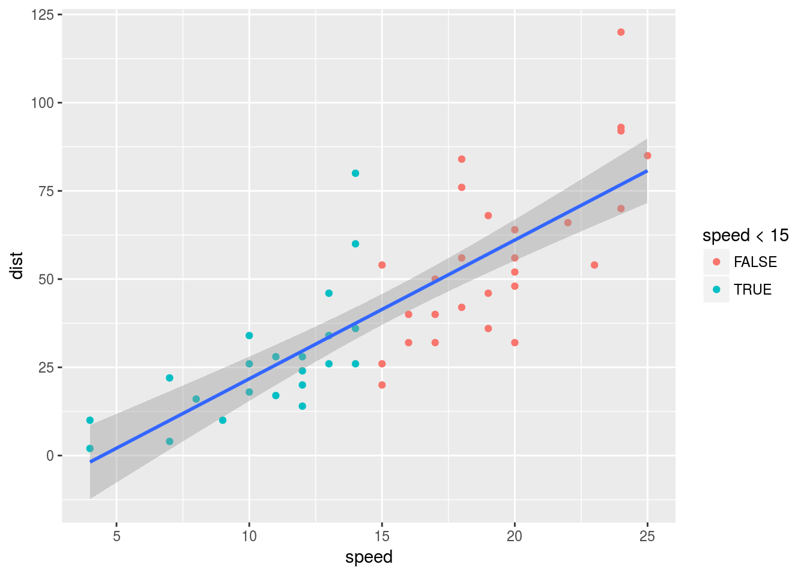
L’esthétique peut être définis manuelement en la déclarant hors de la fonction aes() comme size=4 dans le graphique ci-dessous.
ggplot(cars) + geom_point(aes(x=speed,y=dist,shape=speed<15),size=4)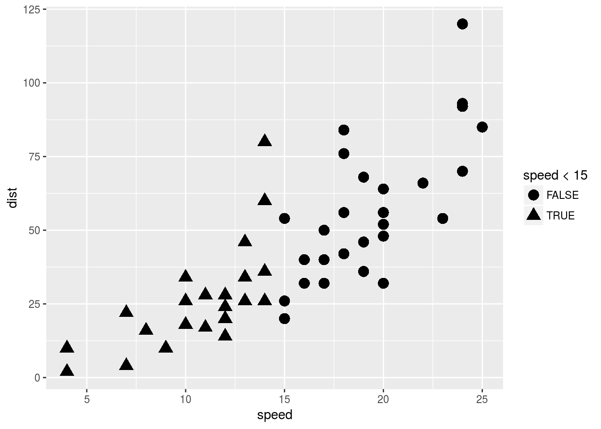
Le but d’utiliser des graphiques est de pouvoir explorer vos données et d’en déduire des relations. Par exemple ci-dessous nous allons utiliser une extension de ggplot2 ggpmisc afin de définir le meilleur modèle linéaire pour les données cars.
# Operator IF ELSE
if (!require("ggpmisc")){
install.packages("ggpmisc")
} else {
}## Loading required package: ggpmisc## NULL# Le package ggmisc permet facilement d'afficher l'équation du modèle linéaire ainsi que
#des métrique d'erreur
# ma_formule = y ~ x -1
# #ma_formule = y ~ x
ma_formule = y ~ poly(x = x,degree =2)
ggplot(cars,aes(x=speed,y=dist)) + geom_point(aes(colour=speed<15)) + geom_smooth(method = "lm",formula = ma_formule ) + stat_poly_eq(aes(label =paste0("atop(",..eq.label..,",",paste(..adj.rr.label..,..AIC.label..,..BIC.label..,sep="~"),")")),formula =ma_formule, parse = TRUE)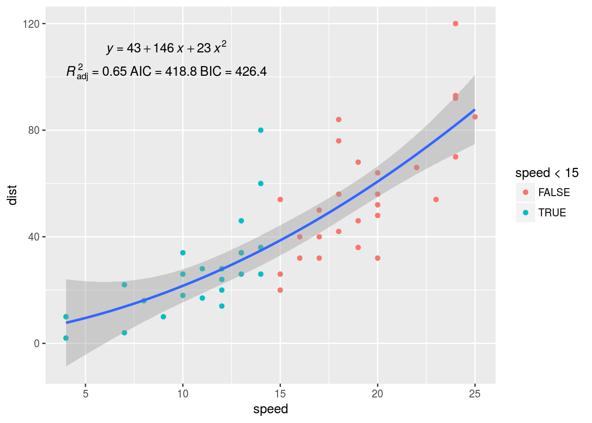
ma_formule = y ~x
ggplot(cars,aes(x=speed,y=dist)) + geom_point(aes(colour=speed<15)) + geom_smooth(method = "lm",formula = ma_formule ) + stat_poly_eq(aes(label =paste0("atop(",..eq.label..,",",paste(..adj.rr.label..,..AIC.label..,..BIC.label..,sep="~"),")")),formula =ma_formule, parse = TRUE)Définition
Le coeffiecient de détermination pour des observations \(y\) et ses valeurs modélisées \(f\) est défini comme :
\[R^2 =1- \frac{\sum_i (y_i-f_i)^2}{\sum_i (y_i-\bar{y})^2}\] \[R^2_{adjusted} = {1-(1-R^2){n-1 \over n-p-1}} = {R^2-(1-R^2){p \over n-p-1}}\]
avec \(p\) le nombre de valeurs explicatives et \(n\) la taille de \(y\).
Plus \(R^2\) est grand plus le modèle, qui prédit \(f\), explique la variance de \(y\).
AIC & BIC
Le critère d’information d’Akaike (AIC) et le critère d’information bayésien (BIC) sont tous les deux une mesure de la qualité d’un modèle statistique.
Il est possible d’augmenter la vraisemblance du modèle statistique testé en ajoutant plusieurs paramètres. Le critère d’information d’Akaike, tout comme le critère d’information bayésien (BIC), permet de pénaliser les modèles en fonction du nombre de paramètres afin de diminuer l’over fiting. On choisit alors le modèle avec le critère d’information d’Akaike ou bayésien le plus faible. Ils sont définis comme :
\[AIC = 2k - 2\ln(L)\] \[BIC = -2\ln(L) + \ln(n)k\] Avec avec \(n\) le nombre d’observations dans l’échantillon étudié et \(k\) le nombre de paramètres et \(L\) la fonction de vraisemblance.
Exercice 1
Nous avons vu plusieurs modèles la dernière fois pour modéliser la vitesse et la distance de freinage. En fonction des différentes métriques d’erreurs présentées au dessus. Séléctionner le modèle satistique le plus pertinant en modifiant ‘ma_formule.’
2.2 Grammaire graphique avec ggplot2
Définition Une librairie R de visualisation de données développée par Hadley Wickham en 2005 selon les principes développés par Leland Wilkinson dans son ouvrage The Grammar of Graphics
\[ Plot = data +Geometry( Aesthetics )\]
- Aesthetics (aes) : les couleurs, les tailles, les formes, les labels mais aussi les données en x et en y
- Geometry (geom_ …) va regrouper les options concernant les types de graphique (line, point, histogramme, heatmap, boxplot, etc.)
ggplot(data = <DATA>) +
<GEOM_FUNCTION>(mapping = aes(<MAPPINGS>))2.2.1 Première étape Data Mining
Nous allons utiliser des données de l’objet mpg, qui est préchargé dans le paquet ggplot.
2.2.1.1 Information sur les données
Il faut connaître les données que nous allons utiliser pour créer les graphiques. Par exemple, savoir si les données contiennent des valeurs discrètes ou continues est important pour deviner la forme des graphiques.
Exercice 2
- Quelle est le type de cet objet ?
- Que contient cet objet ?
- Que siginifie
displethwy? - Quelle est le type des vecteurs hwy, displ et manufacturer ?
- Combien y-a-t il de ligne et de colonne dans mpg ?
2.2.1.2 Nuage de points
Un nuage de points ou un scatterplot est le graphe le plus utilisé en statistique.
Exercice 3
Reproduisez le scatterplot ci-dessous entre hwy et displ puis entre hwy et cyl; entre class et drv. Expliquez pourquoi ces graphes ont ces formes.

2.2.2 L’esthétique gaphique
Dans un graphe, le but est de mettre en évidence les caractéristiques des données que l’on souhaite développer et qui ne sont généralement pas visible à l’œil nu.
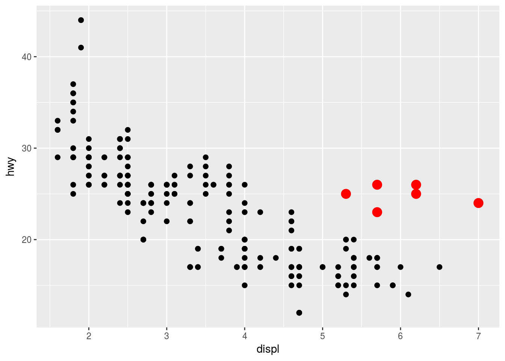
Dans ce scatterplot, les points en rouge ont l’air d’être particulier par rapport à l’ensemble de l’échantillon. La fonction aes() aesthetic permet de définir l’axe des x et des y mais aussi la taille, les couleurs, le type et la transparence des formes géométriques du graphe.
Exercice 4
- Dessiner un nuage de points pour chaque esthétique aes(x,y,shape = class ) définit par la colonne
classpour les couleurs color, les formes shape, la taille size, et la transparence alpha.


Pourquoi il y a des points qui ont disparu de la classe suv dans le graphique où l’on dessine le nuage avec différentes formes de point
aes(x,y,shape=class)?Quel est le problème dans ce code ?
ggplot(data = mpg) +
geom_point(mapping = aes(x = displ, y = hwy,colour="class"))- Quelle est la différence avec les graphiques précédent et quel est l’impact sur les graphes du code ci-dessous ?
ggplot(data = mpg) +
geom_point(mapping = aes(x = displ, y = hwy),colour="blue")
ggplot(data = mpg) +
geom_point(mapping = aes(x = displ, y = hwy),size=10)- Que faut il ajouter pour corriger le graphique ? (indice et regardez le message de warning afficher en console)
## Warning: The shape palette can deal with a maximum of 6 discrete values
## because more than 6 becomes difficult to discriminate; you have 7.
## Consider specifying shapes manually if you must have them.## Warning: Removed 62 rows containing missing values (geom_point).
2.3 Erreurs courantes
Vous avez depuis le début fait des erreurs ou lancé des commandes qui ne marchent pas. Ne vous inquiétiez pas tous les jours même les plus grands programmeurs, hackers et data scientiste en font aussi.
Ci dessous la liste recense des erreurs communes, et décrit la manière de les éviter :
(vérifier que toutes les parenthèses se ferment)""vérifier la même chose pour les guillemets- Vérifier si votre ligne de commande ne finisse pas par un
+ou qu’elle ne commence pas par>ou+
Si vous êtes toujours bloqués, n’hésitez pas à demander de l’aide à R. La commande ?function_name demande à R de l’aide pour une fonction spécifique. La commande ??function_namecomprend une recherche plus large de cette fonction si la première commande ? ne marche pas.
La lecture du message d’erreur est utile. Si le message n’est pas clair, vous avez toujours la possibilité de le Googler. Vous pourriez tomber sur quelqu’un qui a posté sur starck overflow par exemple la même erreur avec la solution au problème.
2.4 Panneaux
Une des forces de ggplot2 est de pouvoir facilement faire plusieurs graphes en fonction d’une des colonnes de la dataframe du graphe. Par exemple, pour reprendre le travail ci-dessus nous pouvons avoir envie de faire un scatterplot pour différentes classes de voitures. Il faut utiliser la fonction facet_wrap() avec comme argument une formule.
ggplot(data = mpg) +
geom_point(mapping = aes(x = displ, y = hwy)) + facet_wrap(facets = ~ class)Par contre, si vous souhaitez séparer votre graphique en fonction de deux variables alors il faut utiliser la fonction facet_grid().
ggplot(data = mpg) +
geom_point(mapping = aes(x = displ, y = hwy)) +
facet_grid(year ~ cyl)Exercice 5
- A quoi sert le
.dans la formule de facet_grid ? (Testez les exemples en dessous)
ggplot(data = mpg) +
geom_point(mapping = aes(x = displ, y = hwy)) +
facet_grid(drv ~ .)
ggplot(data = mpg) +
geom_point(mapping = aes(x = displ, y = hwy)) +
facet_grid(. ~ cyl)- Quelles sont les avantages et les désavantages d’utiliser les fonctions
facetpar rapport à une esthétiqueaes(x,y,color=...)?
ggplot(data = mpg) +
geom_point(mapping = aes(x = displ, y = hwy)) + facet_wrap(facets = ~ class)
ggplot(data = mpg) +
geom_point(mapping = aes(x = displ, y = hwy,color=class)) - Quelles sont les différences entre
facet_grid()etfacet_wrap()? (Indice utiliser?)
2.5 Géométries
## `geom_smooth()` using method = 'loess' 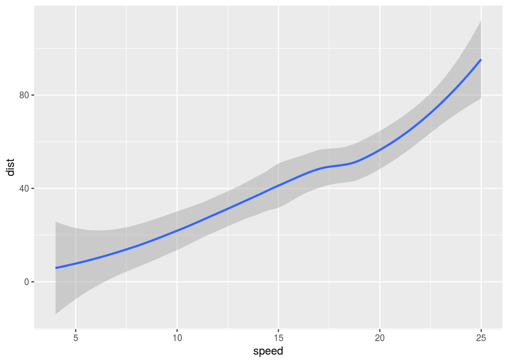
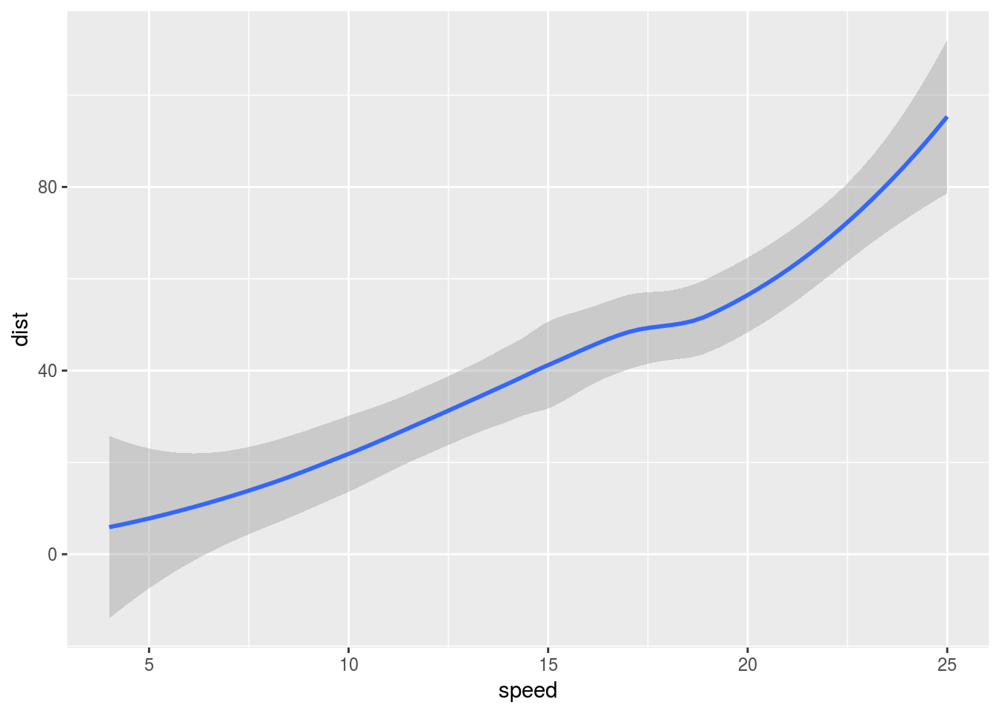
Quelles est la différence entre ces deux graphiques ?
Il y a plus de 30 types de géométrie dans ggplot2. Pour les connaîtres, l’aide mémoire R sur ggplot2 et les extensions de ggplot2 https://www.ggplot2-exts.org sont à lire. Chaque géométrie a ses propres esthétiques. Par exemple, les géométries avec des lignes n’ont pas d’esthétiques shape. Mais elles ont linetype et group en plus.
ggplot(data = mpg) +
geom_smooth(mapping = aes(x = displ, y = hwy, linetype = drv))## `geom_smooth()` using method = 'loess'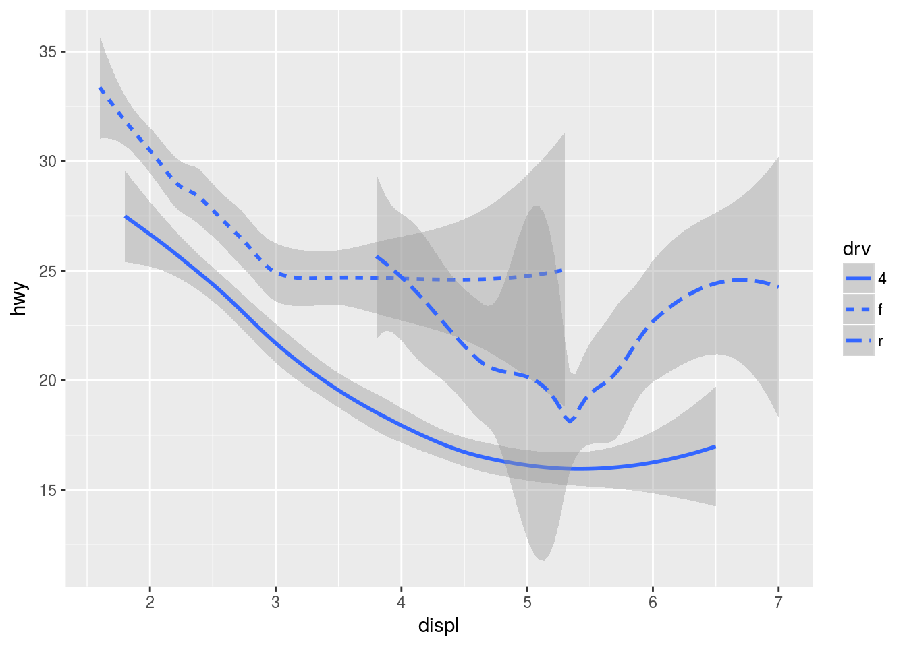
On peut combiner les géométries pour que le graphe soit plus clair.
ggplot(data = mpg) +
geom_smooth(mapping = aes(x = displ, y = hwy, linetype = drv))+
geom_point(mapping = aes(x = displ, y = hwy, color = drv))## `geom_smooth()` using method = 'loess'L’esthétique group permet de dessiner plusieurs lignes en fonction d’une colonne de la data frame.
ggplot(data = mpg) +
geom_smooth(mapping = aes(x = displ, y = hwy))## `geom_smooth()` using method = 'loess'ggplot(data = mpg) +
geom_smooth(mapping = aes(x = displ, y = hwy, group = drv))## `geom_smooth()` using method = 'loess'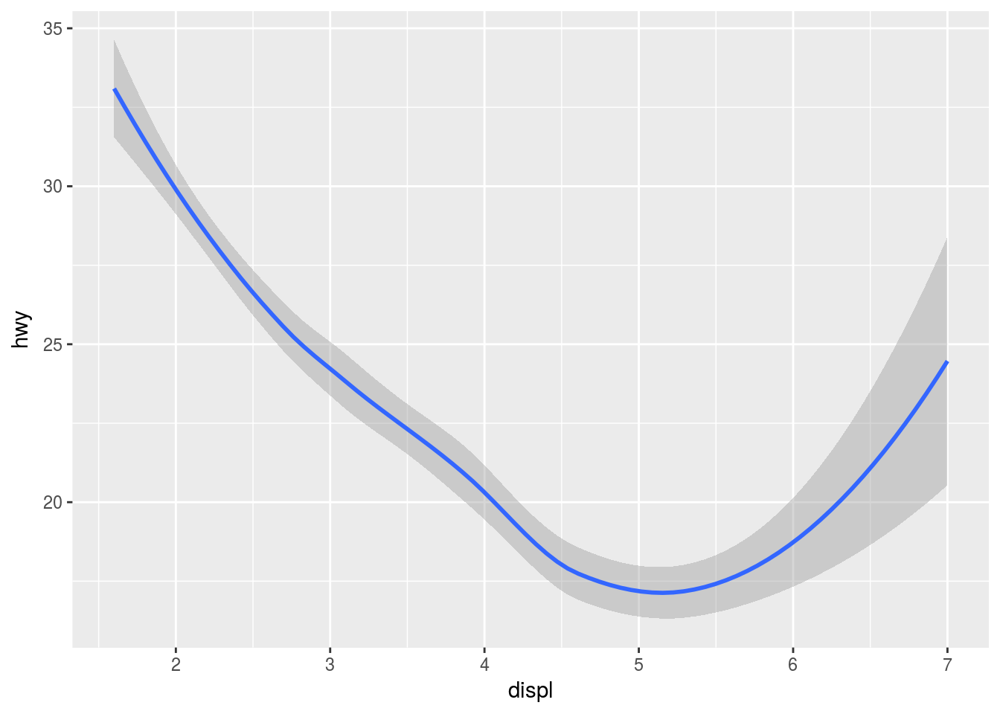
Pour synthétiser le code, il est possible d’ajouter les esthétiques dans la fonction ggplot(data=my_data,aes()). Chaque géométrie prendra alors les esthétiques dans ggplot(aes(...)). On peut toujours ajouter des esthétiques spécifiques dans chaque géométrie.
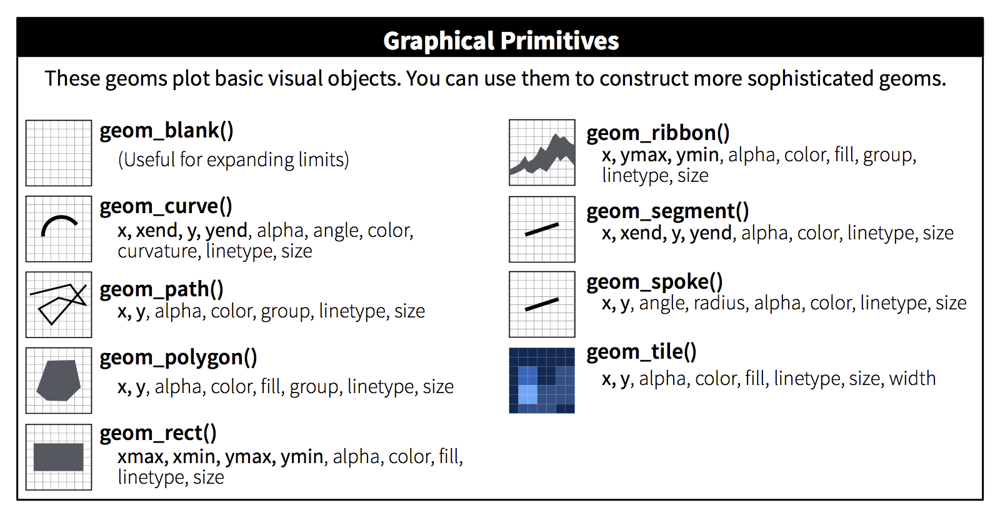 


Exercice 6
- Que font les options
se=FALSEetshow.legend=FALSE?
ggplot(data = mpg, mapping = aes(x = displ, y = hwy, color = drv)) +
geom_point(show.legend=F) +
geom_smooth(se = FALSE,show.legend=FALSE)- Ces deux graphes sont ils différents ?
ggplot(data = mpg, mapping = aes(x = displ, y = hwy)) +
geom_point() +
geom_smooth()
ggplot() +
geom_point(data = mpg, mapping = aes(x = displ, y = hwy)) +
geom_smooth(data = mpg, mapping = aes(x = displ, y = hwy))- Refaire les graphes ci-dessous :
## `geom_smooth()` using method = 'loess'
## `geom_smooth()` using method = 'loess'## `geom_smooth()` using method = 'loess'
## `geom_smooth()` using method = 'loess'## `geom_smooth()` using method = 'loess'
## `geom_smooth()` using method = 'loess'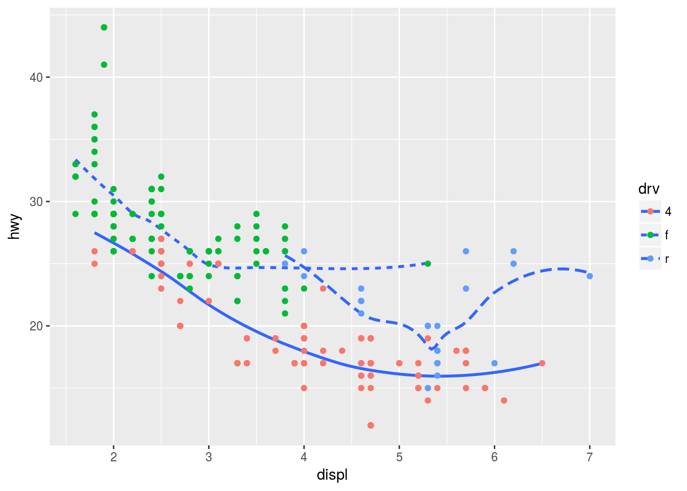
2.6 Graphiques et statistiques
Nous allons étudier la géométrie geom_bar() en français des diagrammes en bâtons, rectangles. Cette géométrie est particulière comparée aux précédentes. Il y a en effet une transformation des données avant de les afficher sur un graphe. Nous allons prendre les données diamonds. Pour plus d’informations sur ces données tapez ?diamonds.
ggplot(data = diamonds) +
geom_bar(mapping = aes(x = cut))Question
- Quel est l’axe des y ? Où se trouve les données de cet axe ?
- Quelle est la différence par rapport aux scatterplots précédents ?

Schéma du graphe
Certaines géométries comme geom_bar utilisent des algorithmes pour calculer les nouvelles valeurs, que l’on nomme stat :
- histogrammes (compte vos données par fréquence)
- boîtes à moustache
geom_smooth()modélise vos données en direct sur le graphe
Il y a plus de 20 stats dans ggplot2 à utiliser pour les découvrir, ?stat_bin, ?stat_count, ?stat_summary.
- Dès fois, la situation oblige à dessiner que des valeurs déjà calculées.
stat = "identity"
demo <- data.frame(
a=seq(10,50,by=10),b= paste("bar",seq(1,5)))
ggplot(data = demo) +
geom_bar(mapping = aes(x = b, y = a), stat = "identity")* Vous avez besoin de calculer une métrique particulière :
ggplot(data = diamonds) +
geom_bar(mapping = aes(x = cut, y = ..prop.., group = 1))Les métriques possibles à calculer en fonction de chaque stat
- On peut créer sa propre boîte à moustache
ggplot(data = diamonds) +
stat_summary(
mapping = aes(x = cut, y = depth),
fun.ymin = min,
fun.ymax = max,
fun.y = median
)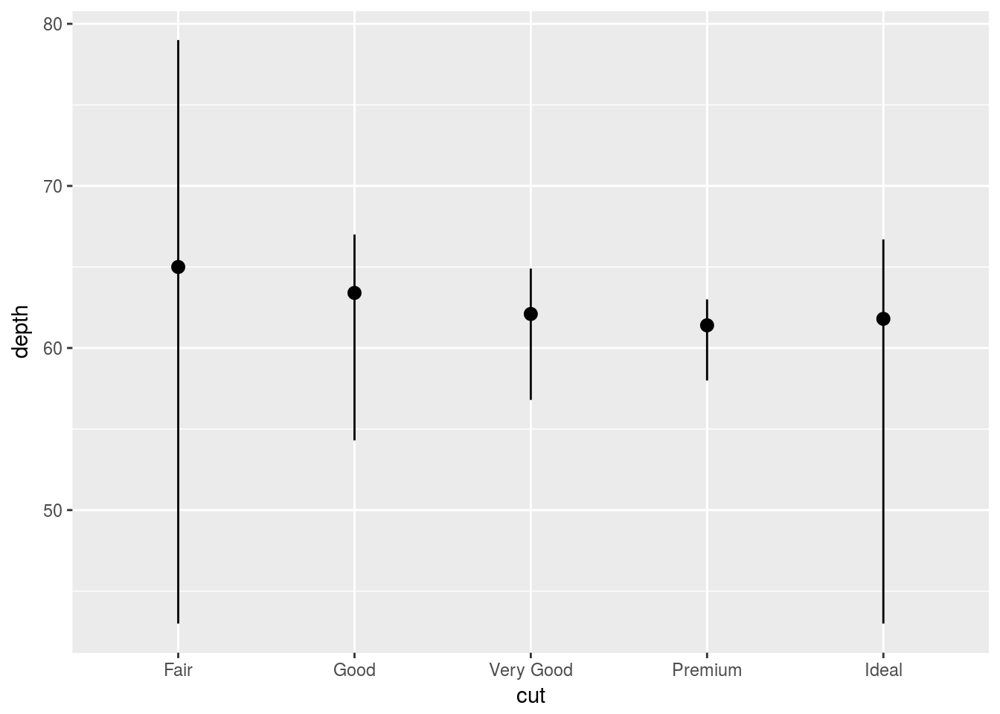
Exercice 7
Quel est l’équivalent géométrique de
stat_summary()? Modifiez le code ci-dessus en utilisant une fonctiongeom_.Quelle est la différence entre les fonctions
stat_etgeom_? Listez les paires entre les deux genres de fonctions.Quelle est le “bug” de ce graphique? Corrigez le.
ggplot(data = diamonds) +
stat_count(mapping = aes(x = cut, y = ..prop..))2.7 Positions et couleurs des graphes
ggplot(data = diamonds) +
geom_bar(mapping = aes(x = cut,color=clarity))ggplot(data = diamonds) +
geom_bar(mapping = aes(x = cut,fill=clarity))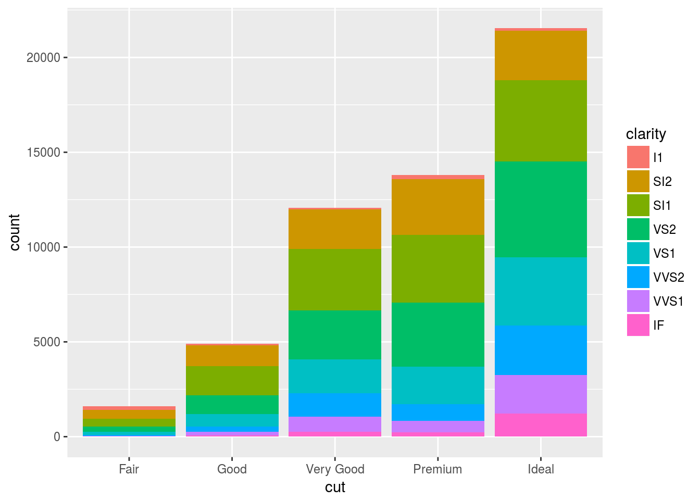
Question
- Quel est le problème avec les graphes précédents ?
Pour résoudre le problème de clarté des graphes précédents, nous pouvons utiliser l’argument position en-dehors de la fonction aes()
Position Stack La position par défaut du diagramme en bâton.
ggplot(data = diamonds) +
geom_bar(mapping = aes(x = cut, fill = clarity)) +
ggtitle('Position = "stack"')Position Fill
Cette ajustement permet plus facilement de comparer les proportions entre chaque groupe.
ggplot(data = diamonds) +
geom_bar(mapping = aes(x = cut, fill = clarity), position = "fill") +
ggtitle('Position = "fill"')Position dodge
ggplot(data = diamonds) +
geom_bar(mapping = aes(x = cut, fill = clarity), position = "dodge") +
ggtitle('Position = "dodge"')Position Jitter
ggplot(data = mpg) +
geom_point(mapping = aes(x = displ, y = hwy), position = "jitter") +
ggtitle('Position = "jitter"')
ggplot(data = mpg) +
geom_point(mapping = aes(x = displ, y = hwy)) +
ggtitle('Position = "No jitter"')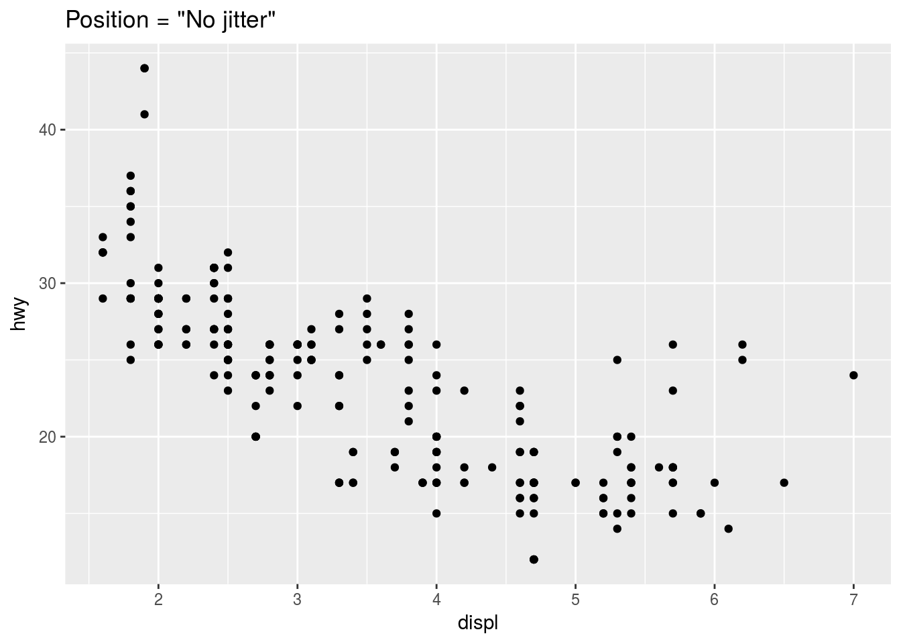
Exercice 8
- Quel est le problème avec ce graphique ? Comment pouvez vous l’améliorer ?
ggplot(data = mpg, mapping = aes(x = cty, y = hwy)) +
geom_point()
- Quels sont les arguments de
geom_jitter()? - Comparer
geom_jitter()etgeom_count()? - Recréer ces graphiques

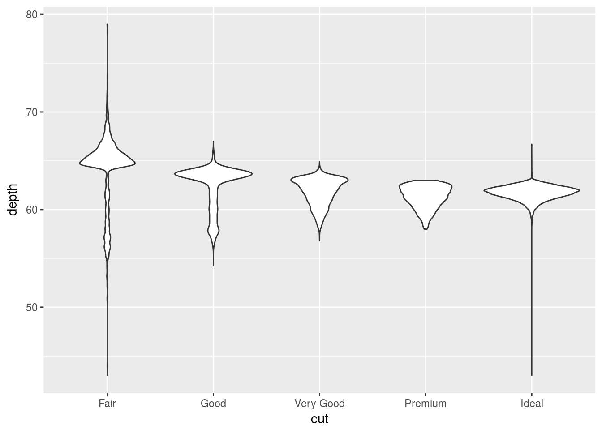
- A quelles valeurs/métriques correspondent les traits horizontaux de la boîte à moustache ? (Indice utiliser
stat_summary)
ggplot(data = diamonds, mapping = aes(x=cut,y=depth)) +
geom_boxplot()
ggplot(data = diamonds, mapping = aes(x=cut,y=depth)) +
geom_boxplot()+
stat_summary( color="red", fun.ymin = min,
fun.ymax = max,
fun.y = median)2.8 Système de coordonnées
Nous pouvons changer les coordonnées cartésiennes en coordonnées polaires. Nous allons commencer par reprendre le des diagrammes en colonnes.
ggplot(data = diamonds) +
geom_bar(mapping = aes(x = cut,fill=cut),colour="black") Puis nous allons ajouter la commande coord_polar()
ggplot(data = diamonds) +
geom_bar(mapping = aes(x = cut,fill=cut),colour="black")+coord_polar()Nous pouvons rester dans les coordonnées cartésiennes et changer l’axe des x et des y facilement avec coord_flip().
ggplot(data = mpg, mapping = aes(x = class, y = hwy)) +
geom_boxplot()
ggplot(data = mpg, mapping = aes(x = class, y = hwy)) +
geom_boxplot() +
coord_flip()#install.packages("maps")
fr <- map_data("france")
ggplot(fr, aes(long, lat, group = group)) +
geom_polygon(fill = "white", colour = "black")
ggplot(fr, aes(long, lat, group = group)) +
geom_polygon(fill = "white", colour = "black") +
coord_quickmap()
Aide mémoire coordonnées avec ggplot2
Exercice 9
Dessinez le département et une région de votre choix ?
Quelle est la différence entre
coord_map()etcoord_quickmap()?
2.9 Themes et addins
Pour améliorer vos graphes :
- Installer l’addin
devtools::install_url("https://cran.r-project.org/src/contrib/rgeos_0.3-22.tar.gz")https://github.com/calligross/ggthemeassist - Utiliser les thèmes prédéfinis
Exercice 10
- Changer le thème du précédent graphes ?
ggplot(fr, aes(long, lat, group = group)) +
geom_polygon(fill = "white", colour = "black") +
coord_quickmap()
Aide mémoire thèmes avec ggplot2
2.10 Histogrammes et courbes de distribution
Les histogrammes et les courbes de distribution sont des outils d’exploration des données très souvent utilisées. L’histogramme permet de rapidement étudier la répartition d’un échantillon.
ggplot(data=diamonds)+geom_histogram(aes(x=price))## `stat_bin()` using `bins = 30`. Pick better value with `binwidth`.La largeur et le nombre des classes (les barres sur le graphe) sont paramétrables avec respectivement les arguement binswidth et bins dans la fonction geom_histogram().
ggplot(diamonds) + geom_histogram(aes(x=price),bins = 10)
ggplot(diamonds) + geom_histogram(aes(x=price),binwidth = 1000)Comme pour les graphes précendents nous pouvons utiliser la fonction facet_grid et facet_wrap pour créer plusieurs graphes en fonction des données de la data.frame étudiée.
ggplot(data=diamonds)+geom_histogram(aes(x=price))+facet_grid(facets = ~clarity)## `stat_bin()` using `bins = 30`. Pick better value with `binwidth`.ggplot(data=diamonds)+geom_histogram(aes(x=price))+
facet_wrap(facets = ~ clarity)## `stat_bin()` using `bins = 30`. Pick better value with `binwidth`.